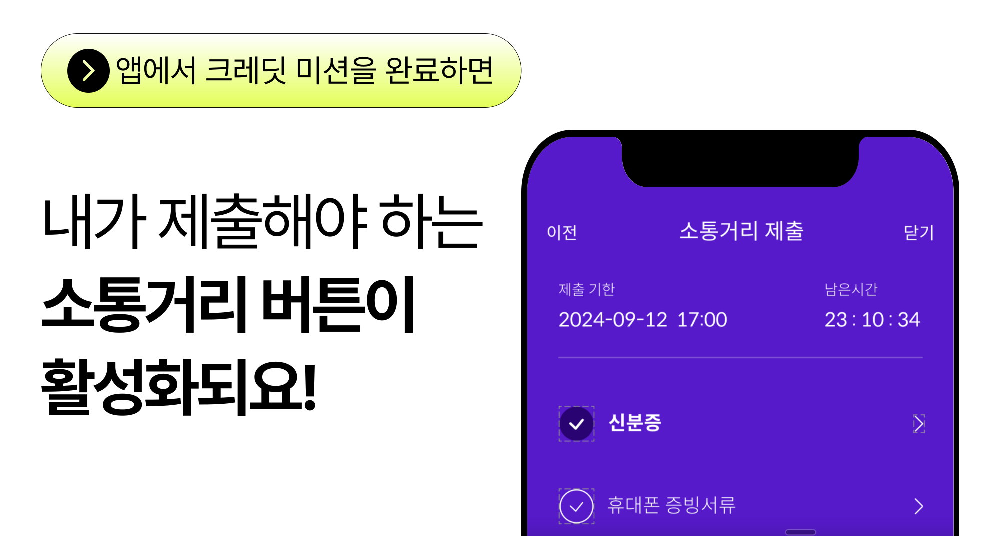
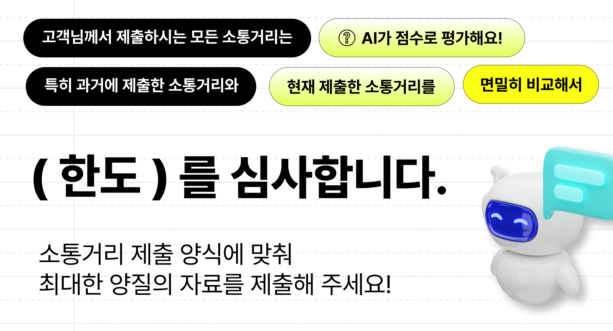

🪪 신분증
본인 확인을 위해 주민등록증, 운전면허증, 여권 중 택1
❗ 주민등록번호 뒷자리와 식별번호는 반드시 가리고, 나머지는 선명하게 보여야 합니다.
.png)
💬 Q&A
Q. 모바일 신분증도 가능한가요?
A. 네 가능합니다.
행정안전부에서 운영하는 모바일 신분증 앱 또는 PASS 등에 등록된 모바일 신분증을 캡쳐해서 올려주시면 됩니다.
❗ 단, 모바일 신분증도 주민등록번호 뒷자리와 식별번호는 반드시 가리고 올려 주세요.


본인 확인을 위해 주민등록증, 운전면허증, 여권 중 택1
❗ 주민등록번호 뒷자리와 식별번호는 반드시 가리고, 나머지는 선명하게 보여야 합니다.
💬 Q&A
Q. 모바일 신분증도 가능한가요?
A. 네 가능합니다.
행정안전부에서 운영하는 모바일 신분증 앱 또는 PASS 등에 등록된 모바일 신분증을 캡쳐해서 올려주시면 됩니다.
❗ 단, 모바일 신분증도 주민등록번호 뒷자리와 식별번호는 반드시 가리고 올려 주세요.
① 본인이 실제 거주중인 주소
②주소 변동이 잘 안되는 본가 주소
2가지를 동, 호수 상세 주소까지 정확히 기입해 주세요.
사실성과 신뢰성을 파악하기 위해
제출하신 등본, 초본 열람 실제 거주지 주소와 본가 주소지를 대조하여
주소지가 불일치할 경우 승인 거절 됩니다.
여성의 경우 해당없음으로 골라주세요.
남성의 경우 반드시 현재 기준으로 병역 정보를 업데이트 해주세요.
| 현재 상태 | [병역 형태]은 이렇게 입력해 주세요. |
|---|---|
| ① 복무 대상이긴 하나 아직 입대 예정이 없는 분 | ▶ [미필]로 변경 |
| ② 특정 사유로 인해 병역 자체가 면제된 분 | ▶ [면제]로 변경 |
| ③ 입대 예정일이 정해진 분 | ▶ [입대 예정]으로 변경 |
| ④ 현재 군복무 중이신 분 | ▶ [군 복무중]으로 변경 |
| ⑤ 최근에 군대를 제대했거나 제대한지 오래된 분 | ▶ [제대]로 변경 |
내가 해당되는 직업을 클릭해 주세요
상환계획은 상환 의지를 표현할 수 있는 가장 중요한 부분입니다.
각 항목 별로 자세하게 앱에 기재해 주세요.
❗ 특히 재신청할 경우 새로운 상환 계획으로 업데이트 해주셔야 승인이 됩니다.
절친 소통내역을 받는 이유
❗ 지난 써주세요 연체 이력을 다 조사해본 결과 연체자님들의 공통적인 하나의 특징이 있습니다.
❌ 바로 절친과 가족과 소통을 전혀 하지 않는다는 것입니다.
이러한 이유로 '사회성'이라는 대안신용평가 기준이 만들어졌으며, 이를 평가하기 위해 자료를 받고 있습니다. 이 자료는 개인정보보호법에 따라 심사 목적 외에는 사용되지 않습니다.
.png)
부모님 소통내역을 받는 이유
❗ 지난 써주세요 연체 이력을 다 조사해본 결과 연체자님들의 공통적인 하나의 특징이 있습니다.
❌ 바로 절친과 가족과 소통을 전혀 하지 않는다는 것입니다.
이러한 이유로 '사회성'이라는 대안신용평가 기준이 만들어졌으며, 이를 평가하기 위해 자료를 받고 있습니다. 이 자료는 개인정보보호법에 따라 심사 목적 외에는 사용되지 않습니다.
.png)
등·초본 제출하는 방법
① 정부24에 접속합니다.
② 정부24 메인 화면 > 자주 찾는 서비스 > 주민등록표 등본(초본) 발급을 클릭합니다.
③ 주민등록표 등본과 초본 각각 발급합니다. (발급일자 1개월 이내만 인정)
④ [발급형태]는 선택 발급으로 설정 후, 문서에 표시할 정보를 아래에 맞게 선택해 주세요.
✅ 포함 과거의 주소 변동 사항
✅ 포함 세대 구성 정보
✅ 포함 세대 구성원 정보
❌ 불포함 주민등록번호 뒷자리
⑤ [수령방법]에서 온라인발급(제3자제출)로 선택 후 발급해 주세요.
📢 제3자 제출을 위해 필요한 수신인 아이디는 아래에 따라 등록해 주세요.
ID : sirjuseyofi
성명 : 정희선
연락처 : 010-2153-6193